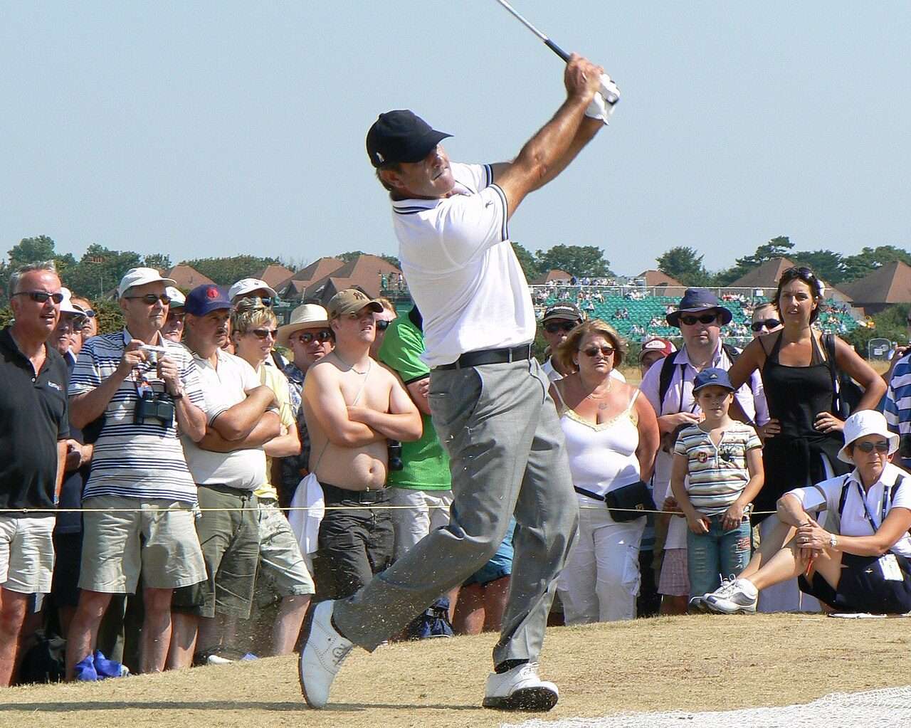
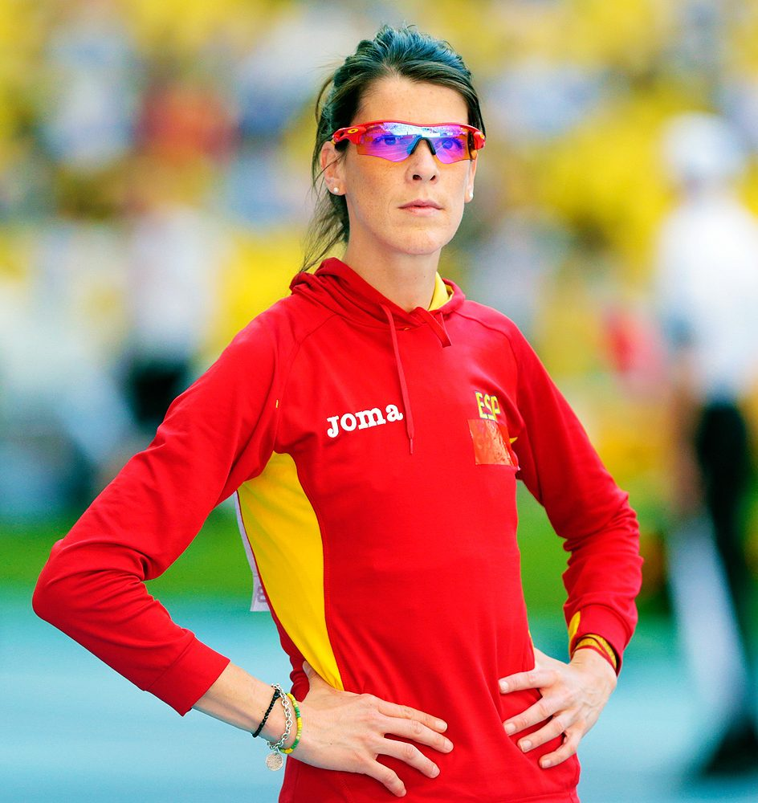

Deportistas
Criterios: PC 2.2, PC 7.3
🤔 Pienso5 min
Qué hago aquí: Piensa un momento y contesta con lo que ya sabes. No pasa nada si no lo sabes: es para empezar.
¿Qué hace falta para ser un gran deportista además de talento?
📖 Leo y aprendo15 min
Qué hago aquí: Lee despacio, mira los dibujos y los ejemplos, y quédate con la idea clave del final.
Cantabria ha dado campeones del mundo en deportes muy distintos. Muchos empezaron jugando en su pueblo, en la playa o en la calle.
| Severiano Ballesteros | (Pedreña, 1957–2011). Uno de los mejores golfistas de la historia: ganó tres Open Británicos y dos Masters de Augusta. Aprendió jugando en la playa con un palo viejo. |
| Paco Gento | (Guarnizo, 1933–2022). Futbolista del Real Madrid; ganó seis Copas de Europa, un récord que nadie igualó hasta 2024. Lo llamaban «la Galerna del Cantábrico». |
| Óscar Freire | (Torrelavega, 1976). Ciclista, tres veces campeón del mundo en ruta (1999, 2001 y 2004). |
| Ruth Beitia | (Santander, 1979). Saltadora de altura; medalla de oro en los Juegos Olímpicos de Río 2016. |

Foto: Peter from Liverpool, UK · CC BY-SA 2.0 · Seve Ballesteros 2006-07-19.jpg

Foto: Augustas Didžgalvis · CC BY-SA 4.0 · Ruth Beitia by Augustas Didzgalvis.jpg
✏️ Hago25 min
Qué hago aquí: Haz las actividades en orden. Empieza siempre por las básicas.
Une cada deportista con su logro. Después explica qué tienen en común Seve y Gento.
Elige la pareja de cada uno.
Responde a Pienso con ejemplos de la ficha: además del talento, ¿qué cualidades muestran las historias de Seve y Gento?
Explica por qué las traineras y el bolo palma son patrimonio inmaterial y no solo deporte. Relaciona las traineras con el mar y el bolo con la vida de los pueblos.
Explica el apodo de Gento, «la Galerna del Cantábrico», usando lo que aprendiste sobre las galernas en la unidad 1.
Óscar Freire fue campeón del mundo en 1999, 2001 y 2004. ¿Cuántos años pasaron entre el primero y el último? Busca cuántos ciclistas en la historia han ganado tres Mundiales en ruta.
Gento y Seve nacieron a orillas de la bahía de Santander, uno frente al otro. Sitúa Guarnizo y Pedreña en un mapa y explica qué relación tenía cada uno con su entorno (playa, campo de golf, astilleros).
✏️ Puedes responder escribiendo, con un dibujo o un esquema, o contándolo en voz alta.
Propón cómo podría tu municipio mantener vivo un deporte tradicional entre los jóvenes: tres medidas concretas.
🚀 Amplío (si quieres saber más)
Qué hago aquí: ¿Has terminado? Lee la curiosidad o elige el reto. Es voluntario.
Investiga las reglas básicas del bolo palma (bolera, bolos, emboque, tiradas, birle) y explícalas con un dibujo de la bolera. Después busca qué peña o club hay cerca de tu colegio y qué competiciones juega.
✅ Compruebo5 min
Qué hago aquí: Contesta sin mirar la ficha y marca cómo lo llevas.